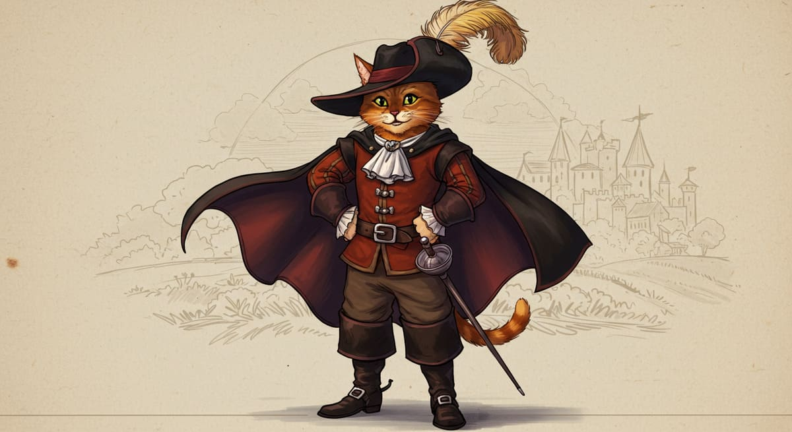

El gato con botas

Había una vez un molinero pobre que cuando murió sólo pudo dejar a sus hijos por herencia el molino, un asno y un gato. En el reparto el molino fue para el mayor, el asno para el segundo y el gato para el más pequeño. Éste último se lamentó de su suerte en cuanto supo cuál era su parte. - ¿Y ahora qué haré? Mis hermanos trabajarán juntos y harán fortuna, pero yo sólo tengo un pobre gato. El gato, que no andaba muy lejos, le contestó: - No os preocupéis mi señor, estoy seguro de que os seré más valioso de lo que pensáis. - ¿Ah sí? ¿Cómo?, dijo el amo incrédulo - Dadme un par de botas y un saco y os lo demostraré. El amo no acababa de creer del todo en sus palabras, pero como sabía que era un gato astuto le dio lo que pedía. El gato fue al monte, llenó el saco de salvado y de trampas y se hizo el muerto junto a él. Inmediatamente cayó un conejo en el saco y el gato puso rumbo hacia el palacio del Rey. - Buenos días majestad, os traigo en nombre de mi amo el marqués de Carabás - pues éste fue el nombre que primero se le ocurrió - este conejo. - Muchas gracias gato, dadle las gracias también al señor Marqués de mi parte. Al día siguiente el gato cazó dos perdices y de nuevo fue a ofrecérselas al Rey, quien le dio una propina en agradecimiento. Los días fueron pasando y el gato continuó durante meses llevando lo que cazaba al Rey de parte del Marqués de Carabás. Un día se enteró de que el monarca iba a salir al río junto con su hija la princesa y le dijo a su amo: - Haced lo que os digo amo. Acudid al río y bañaos en el lugar que os diga. Yo me encargaré del resto. El amo le hizo caso y cuando pasó junto al río la carroza del Rey, el gato comenzó a gritar diciendo que el marqués se ahogaba. Al verlo, el Rey ordenó a sus guardias que lo salvaran y el gato aprovechó para contarle al Rey que unos forajidos habían robado la ropa del marqués mientras se bañaba. El Rey, en agradecimiento por los regalos que había recibido de su parte mandó rápidamente que le llevaran su traje más hermoso. Con él puesto, el marqués resultaba especialmente hermoso y la princesa no tardó en darse cuenta de ello. De modo que el Rey lo invitó a subir a su carroza para dar un paseo. El gato se colocó por delante de ellos y en cuanto vio a un par de campesinos segando corrió hacia ellos. - Buenas gentes que segáis, si no decís al Rey que el prado que estáis segando pertenece al señor Marqués de Carabás, os harán picadillo como carne de pastel. Los campesinos hicieron caso y cuando el Rey pasó junto a ellos y les preguntó de quién era aquél prado, contestaron que del Marqués de Carabás. Siguieron camino adelante y se cruzaron con otro par de campesinos a los que se acercó el gato. - Buenas gentes que segáis, si no decís al Rey que todos estos trigales pertenecen al señor Marqués de Carabás, os harán picadillo como carne de pastel. Y en cuanto el Rey preguntó a los segadores, respondieron sin dudar que aquellos campos también eran del marqués.

Autor: Charles Perrault
Volver al inicio